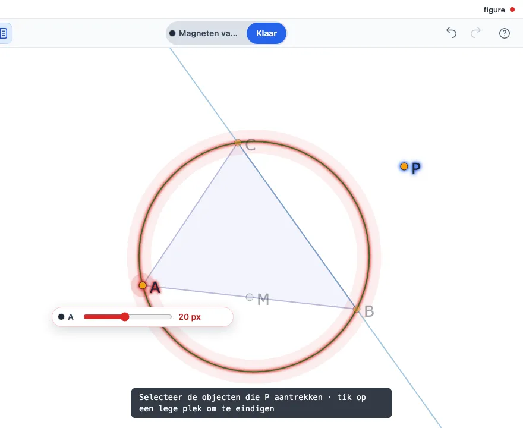

Magneten, punaise en veer
Magneten
Een gemagnetiseerd vrij punt kleeft aan de gekozen objecten als je het er dichtbij sleept, zonder eraan gebonden te zijn.

- Het vrije punt selecteren, dan Magneten. De rest van de figuur komt onder een sluier.
- Elk aantrekkend object aantikken (punt, rechte, cirkel, kegelsnede, kromme, lijst): het wordt rood, met een beginaantrekking van 20 px. Het punt en zijn afhankelijke objecten zijn uitgesloten.
- De aantrekking van de gekozen magneet instellen met de schuifknop op zijn kaart: Geen (verwijdert de magneet), 1 tot 1000 px, Overal. De aantrekkingszone van elke magneet is lichtrood getekend.
- Beëindigen met een tik op een lege plek, Klaar of Esc.
Het punt kun je tijdens het instellen slepen om te proberen. Elke instelling is een stap van ongedaan maken.
Punaise
Vastzetten op het scherm (vrij punt, vlakke figuur): het punt behoudt zijn plaats in het venster, niet zijn coördinaten, bij zoomen of verschuiven van de weergave. Het blijft verplaatsbaar. Tweede druk: opheffen.
Veer
Animeren (punt op een rechte, lijnstuk, halfrechte, cirkel, boog, veelhoek, kegelsnede of meetkundige plaats, of schuifknop) laat onder het punt, of onder de knop van de schuifknop, een veer met een bal verschijnen.
- De bal trekken en loslaten lanceert het object; tijdens het trekken toont een schim van het punt of de knop al de beweging.
- Lengte: snelheid, in getoonde stappen (px/s op een rechte, een veelhoek of een kegelsnede; °/s op een cirkel; % op een meetkundige plaats of een schuifknop).
- Kant: richting; het object vertrekt tegen de trekrichting in: een schuifknop die naar links (of, verticaal, naar beneden) getrokken wordt, neemt toe.
- Dwars op een rechte of een schuifknop (meer dan 45°): heen en weer. Anders loopt het object rond.
- Onder de eerste stap: stop.
Bij een al geanimeerd object verschijnt de veer gespannen op de huidige snelheid. Tweede druk op : de veer wordt opgeborgen. Exacte snelheid, omgekeerde richting, stoppen aan het uiteinde: sectie Animatie van de eigenschappen.